Компании бизнес-сектора могут найти в итогах Исследования инициативы и проекты, релевантные ценностям бренда, либо отзывающиеся ценностям их владельцев или руководителей, и принять участие в масштабировании практик (ресурсами, навыками, возможностями).
Активисты, НКО, социальные предприниматели могут объединять усилия для решения общих (или близких) задач и масштабирования практик.
Люди, для которых устойчивое развитие не является профессиональной сферой деятельности, могут открыть для себя ценностно близкие проекты и содействовать их развитию, либо воспользоваться бережными сервисами.
СМИ получают в Списке широкий срез экологических и социальных инициатив России, чтобы найти кейсы, экспертов или героев (в том числе локальных) для своих материалов.
Органы власти — местные и федеральные — могут увидеть темы, актуальные для общества и те, что, несмотря на выделяемые средства, всё ещё остаются вне зоны видимости; оценить масштаб и географию инициатив, а также включить общественные инициативы и проекты в планы по развитию регионов и национальных проектов.
Партнёры
Инициатор
Бюро партнёрств для достижения целей устойчивого развития «Теперь так».
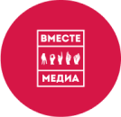
Объединяет региональных медиаигроков. Помощь в размещении опроса в региональных медиа.
Информационная поддержка исследования.
Агентство контент-производства. Подготовка итогов исследования для публикации.
* Сайт издания заблокирован Роскомнадзором по требованию Генпрокуратуры РФ от 24 февраля 2022 г.
Собрали и проанализировали 8 миллионов упоминаний устойчивого развития в социальных медиа.
Активировали городские СМИ на сбор ответов и рассказали в мир об итогах исследования.
Разработали инфографику по географии инициатив и рассказали о проекте у себя
Эксперты
Эксперты принимают участие в анализе инициатив, полученных опросным методом, комментируют тематические области и проекты. Они представляют гражданский сектор, в проекте участвуют pro bono. Мы выражаем глубокую признательность за работу, которую они делают для устойчивого развития.
Алена Юзефович
Living Lab Russia&CIS
Екатерина Терентьева
Фонд «Озеро Байкал»
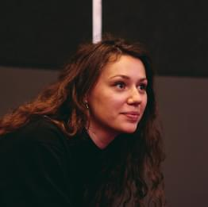
Алина Лихачевская
независимый консультант
Алексей Шаповалов
Ъ-Регенерация
Василий Яблоков
Greenpeace
Сергей Георгиевский
Группа компаний «ЦЕНТР»
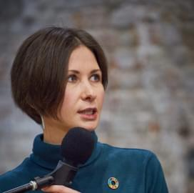
Татьяна Честина
ЭКА
Анастасия Приказчикова
Imorganic
Ольга Лавочкина
Экологическое движение «РазДельный Сбор»
Андрей Скрыпник
«Скрыпник», Youtube
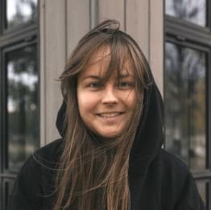
Дарья Чекальская
Специалистка по защите окружающей среды, экоинфлюенсер
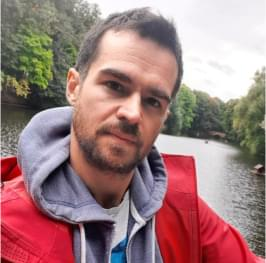
Василий Хорошилов
Дыши: Москва
Валерия Денисова
Незлые вещи, Где тут бизнес
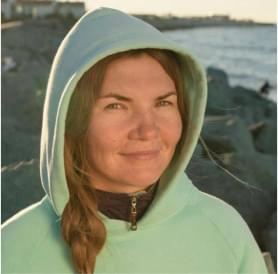
Ирина Шулгестерова
Научно-экологический Центр спасения дельфинов «Дельфа»
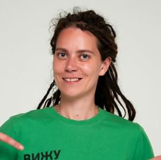
Неля Рахимова
Открытая школа устойчивого развития, Коалиция за устойчивое развитие страны
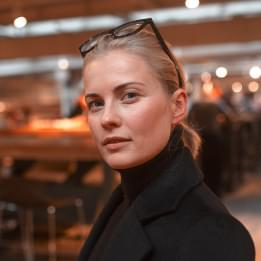
Юлиа Назарова
Фонд продовольствия «Русь»
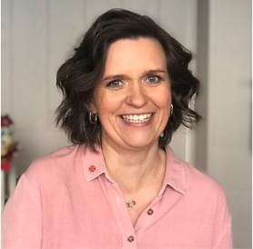
Екатерина Колчанова
бюро партнёрств «Теперь так»
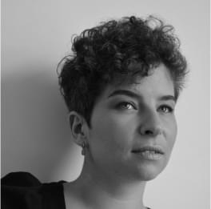
Анастасия Красильникова
Дочь разбойника, Вашу мать
Нина Ильина
«ЭкоТехнологии», «ГК EcoPartners»
Алена Юзефович
Living Lab Russia&CIS
Екатерина Терентьева
Фонд «Озеро Байкал»
Алина Лихачевская
независимый консультант
Алексей Шаповалов
Ъ-Регенерация
Василий Яблоков
Greenpeace
Татьяна Честина
ЭКА
Анастасия Приказчикова
Imorganic
Сергей Георгиевский
Группа компаний «ЦЕНТР»
Ольга Лавочкина
Экологическое движение «РазДельный Сбор»
Андрей Скрыпник
«Скрыпник», Youtube
Дарья Чекальская
Специалистка по защите окружающей среды, экоинфлюенсер
Василий Хорошилов
Дыши: Москва
Ирина Шулгестерова
Научно-экологический Центр спасения дельфинов «Дельфа»
Неля Рахимова
Открытая школа устойчивого развития, Коалиция за устойчивое развитие страны
Юлиа Назарова
Фонд продовольствия «Русь»
Екатерина Колчанова
Бюро партнёрств «Теперь так»
Михаил Акимов
EI Consulting
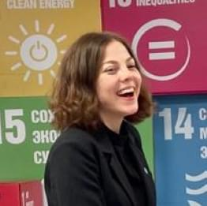
Екатерина Антоневич
менеджер исследования, Aventica
Нина Ильина
«ЭкоТехнологии»
Арина Плюснина
менеджер исследования, Aventica
Василий Яблоков
Greenpeace
Ирина Шулгестерова
Научно-экологический Центр спасения «Дельфа»
Ирина Козловских
Фонд «Второе дыхание»
Алина Лихачевская
Бюро устойчивых практик «12»
Софья Попова
E+ Change
Анастасия Бабичева
Фонд SILSILA
Андрей Скрыпник
Журналист, экоблогер
Сергей Георгиевский
Агентство стратегического развития «ЦЕНТР»
Юлия Островская
Институт социологии Российской Академии Наук
Валерия Денисова
Эксперт АСИ, Impact Hub и «Теперь так»
Василий Хорошилов
«Дыши:Москва»
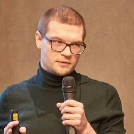
Игорь Новиков
Everland, АНО «Пространство равных возможностей»
Юлия Грачёва
менеджер исследования, Aventica
Дарья Чекальская
Специалистка по защите окружающей среды, экоинфлюенсер
работа с экспертами, бюро «Теперь так» yustiniya@tepertak.ru
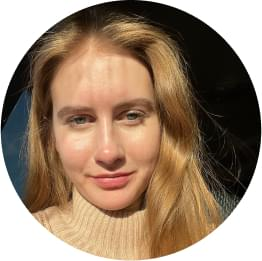
Екатерина Трубицына
пиар проекта, Сарафан PR kktrub31@gmail.com
Мария Гельман
продвижение итогов, бюро «Теперь так» mariagelman@tepertak.ru
Наташа Морызева
арт-директор, Gravity moryzeva@gravityagency.com
Галя Углирж
работа с партнёрами, бюро «Теперь так» galya@tepertak.ru
Катя Югай
дизайнер, Gravity katya.yugai@gravityagency.com
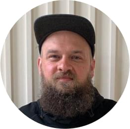
Антон Ногинов
работа с партнёрами, бюро «Теперь так» anton@gravityagency.com
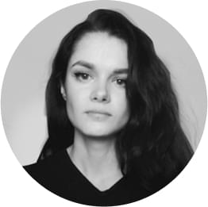
Маргарита Стаф
Менеджер и эксперт проекта, Aventica
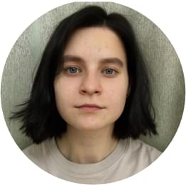
Таня Здобнова
сайт, фактчекеры и продакшн, бюро «Теперь так» zdotat@yandex.ru
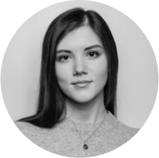
Тамара Щеглова
Менеджер и эксперт проекта, Aventica
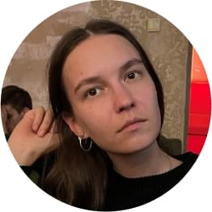
Варя Кузнецова
Продюсер проекта, бюро партнёрств «Теперь так»
Дарья Кирбай
Эксперт проекта, Aventica
Алина Пчелинцева
Редактор текстов, бюро партнёрств «Теперь так»
Волонтёры исследования
Мухаммаджон Набиев
Вёрстка сайта исследования
Алтынай Турижанова
Фактчекинг, работа с акторами выборки
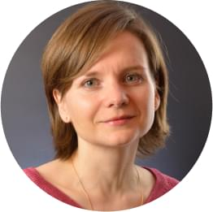
Анна Воеводина
Фактчекинг, работа с акторами выборки
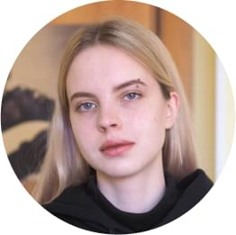
Лидия Чудакова
Фактчекинг
Марина Алиева
Фактчекинг
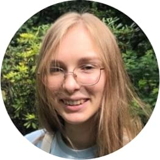
Екатерина Атрощенко
Фактчекинг
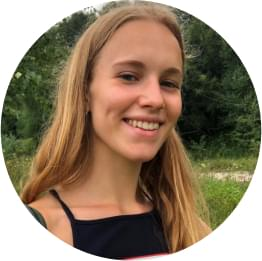
Вера Подгузова
Фактчекинг
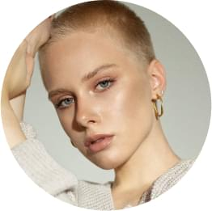
Анна Оха
Фактчекинг
Вызовы устойчивого развития
Для создания справедливого мира, благосостояния всего, без исключений, населения планеты, сохранения окружающей среды и, в то же время, стабильного экономического роста, в 2015 году в ООН были разработаны 17 Целей устойчивого развития (ЦУР). Эти цели являются единым ориентиром для правительств, гражданского общества и бизнесов в решении самых сложных мировых вызовов.


 Екатерина Трубицына
Екатерина Трубицына